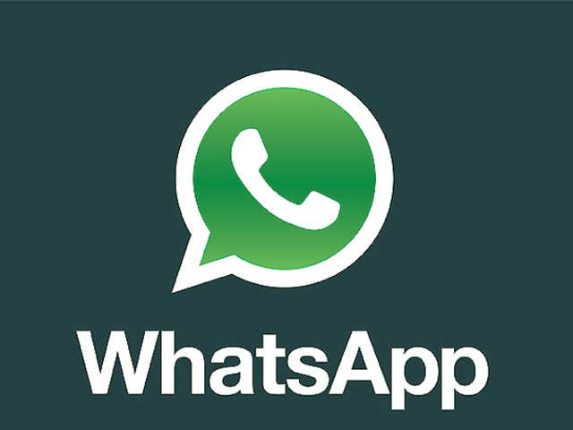
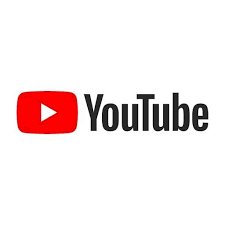

Image 1 -

Twitter is an online social media and social networking service owned and operated by American company Twitter, Inc., on which users send and respond publicly or privately texts, images and videos known as "tweets". Registered users can tweet, like, 'retweet' tweets and direct message (DM), while unregistered users only have the ability to view public tweets. Users interact with Twitter through browser or mobile frontend software, or programmatically via its APIs.
Twitter was created by Jack Dorsey, Noah Glass, Biz Stone, and Evan Williams in March 2006 and launched in July of that year.
Image 2 -

WhatsApp was founded by Jan Koum and Brian Acton who had previously spent 20 years combined at Yahoo. WhatsApp joined Facebook in 2014, but continues to operate as a separate app with a laser focus on building a messaging service that works fast and reliably anywhere in the world.
Image 3 -

Kevin Systrom (born December 30, 1983) is an American computer programmer and entrepreneur. He co-founded Instagram, the world's largest photo sharing website, along with Mike Krieger. Holliston, Massachusetts, U.S. Systrom was included on the list of America's Richest Entrepreneurs Under 40 2016.
Image 4 -

- Facebook, initially titled as thefacebook.com and limited to Harvard students, launched on Feb. 4, 2004. In 2006
- Mark Zuckerberg along with fellow Harvard mates, Eduardo Saverin, Andrew McCollum, Dustin Moskovitz and Chris Hughes founded Facebook.
Image 5 -

- It was launched on February 14, 2005, by Steve Chen, Chad Hurley, and Jawed Karim.
- It is owned by Google, and is the second most visited website, after Google Search.
Image 6 -

Gemini Solutions